=-1.56cm =-1.54cm =27.9cm =8.5cm =19cm =L = L =
VIM QUICK REFERENCE CARD
Basic movement
h l k jcharacter left, right; line up, down
b wword/token left, right
ge eend of word/token left, right
{ }beginning of previous, next paragraph
( )beginning of previous, next sentence
0 gmbeginning, middle of line
^ $first, last character of line
G ggline , default the last, first
%percentage of the file ( must be provided)
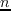column of current line
%match of next brace, bracket, comment, #define
H Lline from start, bottom of window
Mmiddle line of window
Insertion & replace 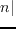 insert mode
i ainsert before, after cursor
I Ainsert at beginning, end of line
gIinsert text in first column
o Oopen a new line below, above the current line
rreplace character under cursor with
grlike r, but without affecting layout
Rreplace characters starting at the cursor
gRlike R, but without affecting layout
cchange text of movement command
ccSchange current line
Cchange to the end of line
schange one character and insert
~switch case and advance cursor
g~switch case of movement command
gu gUlowercase, uppercase text of movement
 shift left, right text of movement
shift left, right text of movement

 shift lines left, right
shift lines left, right
Deletion
x Xdelete character under, before cursor
ddelete text of movement command
dd Ddelete current line, to the end of line
J gJjoin current line with next, without space
:d delete range lines
:d delete range lines into register
Insert mode
^V ^Vinsert char literally, decimal value
^Ainsert previously inserted text
^@same as ^A and stop insert command mode
^R ^R^Rinsert content of register , literally
^N ^Ptext completion before, after cursor
^Wdelete word before cursor
^Udelete all inserted character in current line
^D ^Tshift left, right one shift width
^K 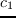
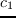 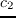enter digraph
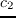enter digraph
^Oexecute in temporary command mode
^X^E ^X^Yscroll up, down
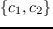esc^[abandon edition command mode
Copying
"use register for next delete, yank, put
:reg show the content of all registers
:reg show the content of registers
yyank the text of movement command
yyYyank current line into register
p Pput register after, before cursor position
]p [plike p, P with indent adjusted
gp gPlike p, P leaving cursor after new text
Advanced insertion
g?perform rot13 encoding on movement
^A ^X, 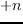 to number under cursor
gqformat lines of movement to fixed width
:ce 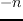 center lines in range to width
:le left align lines in range with indent
:ri right align lines in range to width
! filter lines of movement through command
!! filter lines through command
:! filter range lines through command
Visual mode
v V ^Vstart/stop highlighting characters, lines, block
oexchange cursor position with start of highlighting
gvstart highlighting on previous visual area
aw as apselect a word, a sentence, a paragraph
ab aBselect a block ( ), a block { }
Undoing, repeating & registers
u Uundo last command, restore last changed line
.^Rrepeat last changes, redo last undo
. repeat last changes with count replaced by
q qrecord, append typed characters in register
qstop recording
@execute the content of register
@@repeat previous @ command
:@ execute register as an Ex command
:g// execute Ex command on range
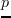 where pattern matches
Complex movement
- +line up, down on first non-blank character
B Wspace-separated word left, right
gE Eend of space-separated word left, right
_down line on first non-blank character
g0beginning of screen line
g^ g$first, last character of screen line
gk gjscreen line up, down
f Fnext, previous occurence of character
t Tbefore next, previous occurence of
; ,repeat last fFtT, in opposite direction
[[ ]]start of section backward, forward
[] ][end of section backward, forward
[( ])unclosed (, ) backward, forward
[{ ]}unclosed {, } backward, forward
[m ]mstart of backward, forward Java method
[# ]#unclosed #if, #else, #endif backward, forward
[* ]*start, end of /* */ backward, forward
Search & substitution
/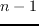 ? search forward, backward for
//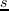 ?? search fwd, bwd for with offset
n/ repeat forward last search
N? repeat backward last search
# *search backward, forward for word under cursor
g# g*same, but also find partial matches
gd gDlocal, global definition of symbol under cursor
:s//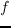/ substitute by in range
g--all occurrences, c--confirm changes
:s repeat substitution with new &
Special characters in search patterns
.^ $any single character, start, end of line
\ \ start, end of word
start, end of word
[]a single character in range
[^]a single character not in range
\i \k \I \Kan identifier, keyword; excl. digits
\f \p \F \Pa file name, printable char.; excl. digits
\s \Sa white space, a non-white space
\e \t \r \besc, tab, , 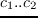
\= * \+match  , 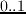, of preceding atoms
, 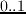, of preceding atoms
\ separate two branches ( or)
separate two branches ( or)
\( \)group patterns into an atom
\& \the whole matched pattern, () group
\u \lnext character made upper, lowercase
Offsets in search commands
+ line downward in column 1
- line upward in column 1
e+ e- characters right, left to end of match
s+ s- characters right, left to start of match
;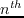execute search command next
Marks and motions
mmark current position with mark
` `go to mark in current, in any file
`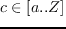go to last exit position
`` `"go to position before jump, at last edit
`[ `]go to start, end of previously operated text
:marks print the active marks list
:jumps print the jump list
^Ogo to older position in jump list
^Igo to newer position in jump list
Key mapping & abbreviations
:map 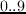 map in normal & visual mode
:map! map in insert & cmd-line mode
:unmap :unmap! remove mapping
:mk write current mappings, settings... to file
:ab add abbreviation for
:ab show abbreviations starting with
:una remove abbreviation
Tags
:ta jump to tag
:ta jump to newer tag in list
^] ^Tjump to the tag under cursor, return from tag
:ts list matching tags and select one for jump
:tj jump to tag or select one if multiple matches
:tags print tag list
:po :^T jump back from, to older tag
:tl jump to last matching tag
^W} :pt preview tag under cursor, tag
^W]split window and show tag under cursor
^Wz:pc close tag preview window
Scrolling & multi-windowing
^E ^Yscroll line up, down
^D ^Uscroll half a page up, down
^F ^Bscroll page up, down
ztz set current line at top of window
zzz. set current line at center of window
zbz-set current line at bottom of window
zh zlscroll one character to the right, left
zH zLscroll half a screen to the right, left
^Ws:split split window in two
^Wn:new create new empty window
^Wo:on make current window one on screen
^Wj ^Wkmove to window below, above
^Ww ^W^Wmove to window below, above (wrap)
Ex commands ( )
:e edit file , unless changes have been made
:e! edit file always (by default reload current)
:wn :wNwrite file and edit next, previous one
:n :Nedit next, previous file in list
:wwrite range to current file
:w write range to file
:w
 append range to file
append range to file
:q :q!quit and confirm, quit and discard changes
:wq:xZZwrite to current file and exit
up downrecall commands starting with current
:r insert content of file below cursor
:r! insert output of command below cursor
:allopen a window for each file in the argument list
:argsdisplay the argument list
Ex ranges
, ; separates two lines numbers, set to first line
an absolute line number
.$the current line, the last line in file
% *entire file, visual area
'position of mark
// ??the next, previous line where matches
+ -, to the preceding line number
Folding
zfcreate fold of movement
:focreate fold for range
zd zEdelete fold at cursor, all in window
zo zc zO zCopen, close one fold; recursively
[z ]zmove to start, end of current open fold
zj zkmove down, up to start, end of next fold
Miscellaneous
:sh :! start shell, execute command in shell
Klookup keyword under cursor with man
:make start make, read errors and jump to first
:cn :cp display the next, previous error
:cl :cf list all errors, read errors from file
^L ^Gredraw screen, show filename and position
g^Gshow cursor column, line, and character position
gashow A value of character under cursor
gfopen file which filename is under cursor
:redir redirect output to file
redirect output to file
:mkview save view configuration [to file ]
:loadview load view configuration [from file ]
^@ ^K ^_ \ F ^Funmapped keys
L L